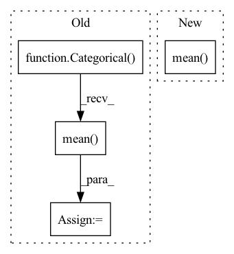

Pattern ID :2211

Before Change
else:
// Generator step: corrupt context relations
logit = logit.permute(0, 2, 1).reshape(-1, k)
p = Categorical(logits=logit)
q = Categorical(logits=torch.zeros_like(logit))
loss = kl_divergence(p, q).mean()
losses.append(loss)
return sum(losses)
After Change
// p = Categorical(logits=logit)
// q = Categorical(logits=torch.zeros_like(logit))
// loss = kl_divergence(p, q).mean()
loss = -torch.minimum(self._ceLoss(logit, target), -torch.log(torch.ones_like(target, dtype=torch.float32) / k)).mean()
losses.append(loss)
return sum(losses) / len(losses)
In pattern: SUPERPATTERN
Frequency: 3
Non-data size: 4
Instances
Fragment ID: 7760228
Project Name: xiaosu-zhu/mcquic
Commit Name: 006c18a0b581431293e06d75d72a1a5ec392d6f6
Time: 2021-05-29
Author: xiaosu.zhu@outlook.com
File Name: src/mcqc/losses/mlm.py
M Class Name: ContextGANLoss
N Class Name: ContextGANLoss
M Method Name: forward(4)
N Method Name: forward(4)
M Parent Class: nn.Module
N Parent Class: nn.Module
M File Name: src/mcqc/losses/mlm.py
N File Name: src/mcqc/losses/mlm.py
M Start Line: 54
M End Line: 69
N Start Line: 54
N End Line: 70
'>
Before Change
for logit in logits:
// [N, H, W, K] -> [N, K]
// logit = logit.mean(dim=(1, 2))
posterior = Categorical(logits=logit)
prior = Categorical(logits=torch.zeros_like(logit))
reg = torch.distributions.kl_divergence(posterior, prior).mean()
regs.append(reg)
regs = sum(regs) / len(logits)
// regs = 0.0
return ssimLoss, l1Loss + l2Loss, regs
After Change
logit = logit.permute(0, 3, 1, 2)
ceReg = F.cross_entropy(logit, sample, reduction="none") * needRegMask
cePush = F.cross_entropy(logit, code, reduction="none") * (1 - needRegMask)
regs.append(ceReg.mean() + cePush.mean())
// // [m, n, h, w] and m * list(n, h, w, k) logits and [n, k] frequencies
// for code, logit, freq in zip(codes.permute(1, 0, 2, 3), logits, codeFreq):
// // perturb code by the most rare codes with 0.1 probability
'>
Fragment ID: 7760229
Project Name: xiaosu-zhu/mcquic
Commit Name: 3b419aa2f7b4286b6ae991022fe7469650db4bbd
Time: 2021-08-01
Author: xiaosu.zhu@outlook.com
File Name: src/mcqc/losses/quantization.py
M Class Name: CompressionLoss
N Class Name: CompressionLoss
M Method Name: forward(6)
N Method Name: forward(6)
M Parent Class: nn.Module
N Parent Class: nn.Module
M File Name: src/mcqc/losses/quantization.py
N File Name: src/mcqc/losses/quantization.py
M Start Line: 50
M End Line: 57
N Start Line: 49
N End Line: 88
'>
Before Change
// [N, H, W, K] -> [N, K]
// logit = logit.mean(dim=(1, 2))
posterior = Categorical(logits=logit)
prior = Categorical(logits=torch.zeros_like(logit))
reg = torch.distributions.kl_divergence(posterior, prior).mean()
// [n, h, w, k]
// weight = (-logit).detach().softmax(-1)
// oneHot = F.one_hot(code, num_classes=logit.shape[-1]).float()
// [n, h, w]
After Change
// logit = logit.mean(dim=(1, 2))
posterior = Categorical(logits=logit)
// [N, H, W]
reg = posterior.entropy().mean()
// prior = Categorical(logits=torch.zeros_like(logit))
// reg = torch.distributions.kl_divergence(posterior, prior).mean()
// // [n, h, w, k]
// // weight = (-logit).detach().softmax(-1)
'>
Fragment ID: 7760234
Project Name: xiaosu-zhu/mcquic
Commit Name: 57e88ad60fddbcfe778834fbd8a0ffc816fca34c
Time: 2021-09-10
Author: xiaosu.zhu@outlook.com
File Name: src/mcqc/losses/quantization.py
M Class Name: CompressionLoss
N Class Name: CompressionLoss
M Method Name: forward(8)
N Method Name: forward(8)
M Parent Class: nn.Module
N Parent Class: nn.Module
M File Name: src/mcqc/losses/quantization.py
N File Name: src/mcqc/losses/quantization.py
M Start Line: 48
M End Line: 125
N Start Line: 49
N End Line: 114